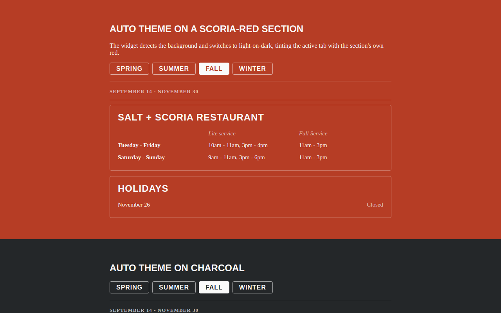

Try it right here
This loads the live project from its own domain, exactly as a visitor would see it.
What it does
The Library's restaurant, Salt + Scoria, keeps its hours in Drupal on trlibrary.com, which blocks cross-origin requests. The restaurant's own Squarespace site therefore could not read them, and staff were updating two places by hand.
A scheduled job scrapes the hours markup and its schema.org JSON-LD every six hours and writes a small JSON file. GitHub Pages serves that file with permissive CORS, and a tiny embed renders seasonal tabs on the Squarespace page. If parsing ever breaks, the script exits non-zero and the last good file stays published — the page never goes blank.
What it can do
- Six-hourly sync of seasonal tabs, service rows, and holiday closures
- Fails safe — a broken parse never overwrites good published data
- Detects the current season by date, with a year-agnostic fallback
- Background-aware theming that flips to light-on-dark over colored sections
- Adopts the host page's own heading and body fonts
- Shadow DOM isolation from the host CMS's stylesheet
Make it your own
Start by forking the repository into your own organization. Everything below assumes you are working in your fork, not this one.
- Fork the repo and change the source URL in
scripts/extract-hours.mjsto your own hours page. - Rewrite the parser's selectors to match your markup. Use
--fixture test/fixture.htmlagainst a saved copy of your page to test offline. - Settings → Pages → Deploy from a branch,
main, folder/docs. - Settings → Actions → General → Workflow permissions → Read and write, so the sync job can commit its output.
- Run the Sync hours workflow once by hand to publish live data.
- Add a code block on the host site with
<div data-trpl-hours></div>and your embed URL. Setdata-themeanddata-accentto match your brand.
Stuck on a step? Open an issue on the repository. Questions from people adapting these for their own institution are the most useful feedback we get.